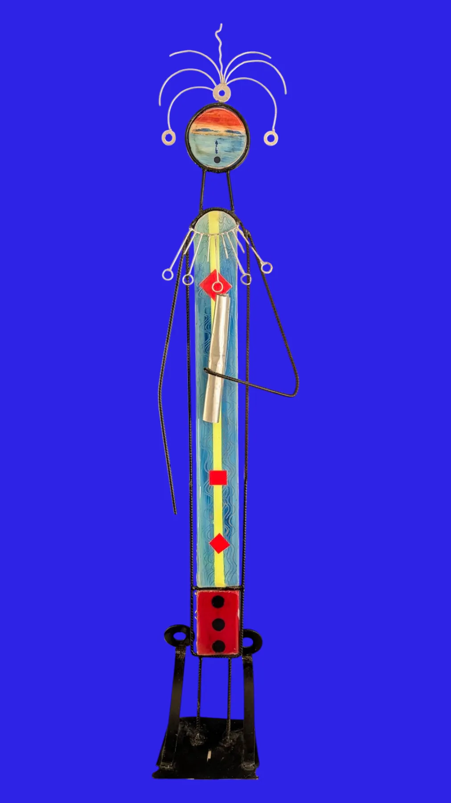

Figura Uno · 2025
Serie Figuras
2025
Sobre la pieza
El rostro es un horizonte pintado — mar y cielo encerrados en un disco de madera. El cuerpo, una franja azul recorrida por una línea amarilla y marcada por dos rombos rojos, sostiene una barra de aluminio en diagonal, como un brazo que señala algo fuera de campo.